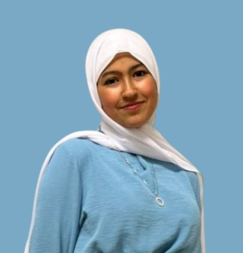

Enthusiastic geospatial informatics student at MSE, passionate about geospatial analysis, remote sensing, and digital mapping solutions.
I am Nour Elimen Sbaiti, first-year Geospatial engineering student at MSE (Manouba School of Engineering ) with a strong interest in geospatial analysis , remote sensing, and digital mapping technologies. Focused on applying data-driven geospatial solutions to tackle global environmental and technological challenges
Based in Tunis
Download CVPursuing an engineering degree with a focus on geospatial technologies, GIS, remote sensing, geodesy, spatial data analytics and computer science.
Intensive academic training in Mathematics, Physics & Computer Science
Graduated with honors.
Leading a campus transformation project focused on sustainable water management and the Sustainable Development Goals (SDGs).
Gained practical experience in topography, geodesy, and land surveying. Worked with professional equipment including GNSS systems, total stations, stereoplotters, and 3D laser scanners.
Desktop application for managing and monitoring seismic events.
Web platform for smart agricultural land management.
Android application for managing lost and found items on campus.
LULC dashboard for land use / land cover monitoring, based on satellite image classification (Nabeul & Bizerte) using ML and DL.
Competitions & Community
MSE Hack 1.0 — GeoAI and Serious Games Hackathon for Ecosystem Restoration
ParticipantORBYX ML Challenge 1.0 — ENSI Machine Learning Competition
ParticipantThe Ruins Round Contest — ISI Ariana Problem Solving Competition
ParticipantAcaRobotics NextGen25 Fighter Competition
ParticipantRoboCup 2024 — Association Robotique ENSI
Organizing Committee MemberBrainX Program (Open Startup) — Entrepreneurship and Innovation Program
ParticipantIEEE MSE Student Branch
MemberORBYX ENSI Club — AI & Data Science Club
MemberENSI Robotics Association (ARE)
Expert Member